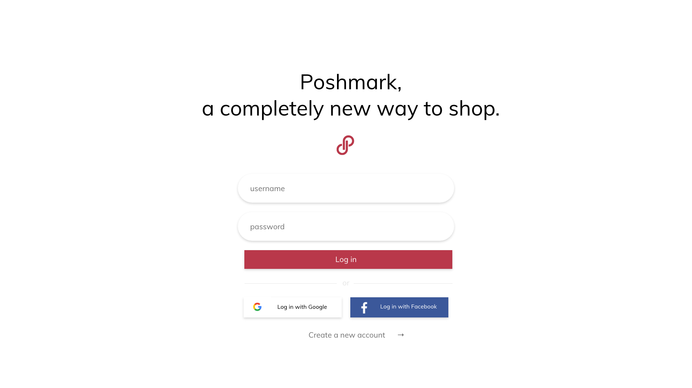
It was combining a social media website and clothing website interface, which made it confusing for first-time users.
The listings were organized through “Posh Markets” and also categorizing tabs at the top of the page, which is repetitive.
Clear distinction between social media-esque feed and listings.
Reduce the two forms of organization into one.
Minimalist, clean design that is intuitive and memorable.
Landing/sign-in page with Google and Facebook login features
Sign up page - “Posh Parties” description for first-time users
Redesigned home page. The “Feed” tab is where you can view accounts that you follow. “Posh Market” is replaced by “Filter by” for clarification.
"Listings" tab, where all listings on Poshmark are available. This page shows the listings under "All Categories".
Options in the “Filter by” dropdown menu (originally “Posh Market”).
The next set of filters in the dropdown menu is triggered by hovering.
Redesigned user profile. Followers/following and listings/shares are now in separate lines and are clearly distinguishable.
Margin-left: 20px
Margin-right: 20px
Font size: 21px for heading, 16px for body text
The layout of the image and text boxes are stacked on top of each other. The navigation bar stays sticky on the top.
User 1 navigated through the interface as we intended. She likes how the redesign is simple and clean, and likes the new form of organization (markets). She thinks the icons at the bottom left should be moved to the top right. She says she was a little lost and didn’t know where to look at on the landing page.
User 2 mentions that she was confused by the 3-way split-screen layout. She says she was confused about the intention in general because she’s personally conditioned to separate social media and clothing website interfaces. She thinks the redesign is nice and less chaotic compared to the original.
User 3 prefers organization by category tabs at the top. She was confused about what “Parties” are, and also thinks that the icons at the bottom left should be moved to the top right. She thinks the redesign is better and simpler, and the original website is chaotic. She thinks the original website’s aesthetic and brand identity is somewhat boring, and seems to be targeted towards an older audience. She mentioned the incorporation of personalized profiles, such as tumblr’s customizable blogs.

POSHMARK-REDESIGN
2019
We were tasked to redesign several pages of a website to improve their usability, visual
design, and responsiveness. We began by analyzing the usability of the original interface using the criteria from usability.govintuitive design, ease of learning, efficiency of use, and memorability.
UI/UX Design, Redesign
IDEATION
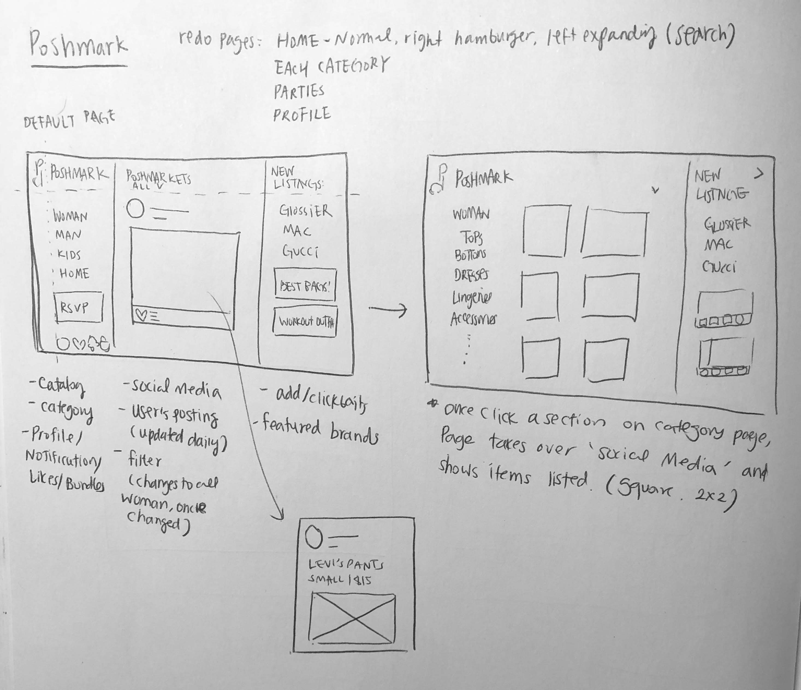

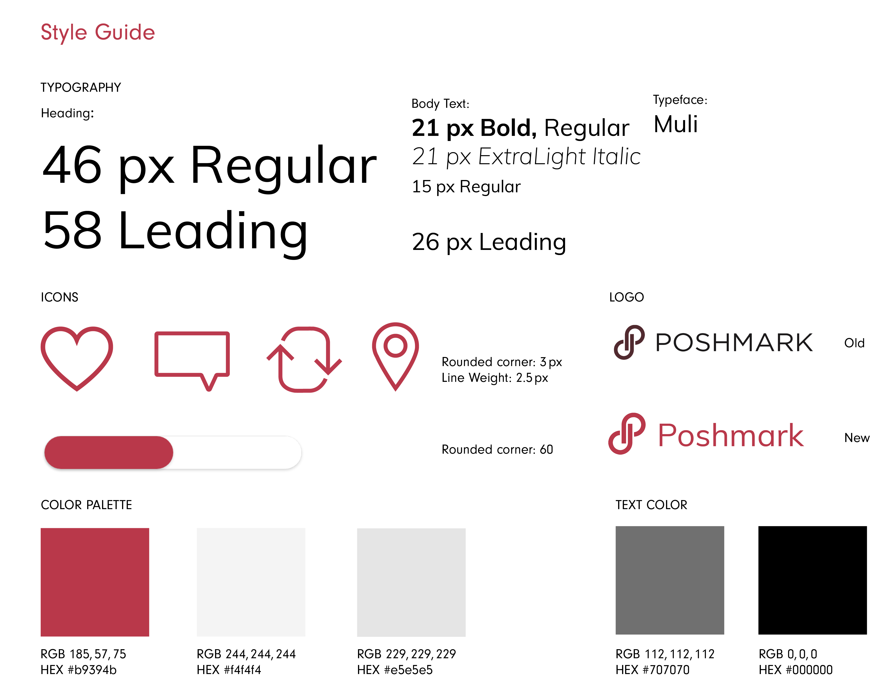
PROBLEM
The biggest problem we tackled was the reorganization of information from the Poshmark website. There were two main issues:
We were tasked to redesign several pages of a website to improve their usability, visual design, and responsiveness. We began by analyzing the usability of the original interface using the criteria from usability.govintuitive design, ease of learning, efficiency of use, and memorability.
UI/UX Design, Redesign
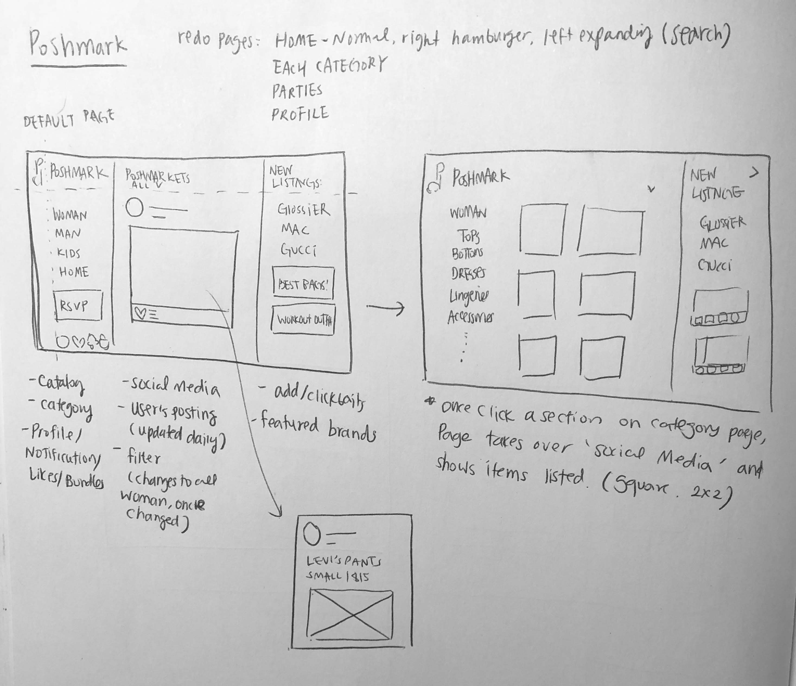
GOAL
Our main goals with the redesign are as follows:
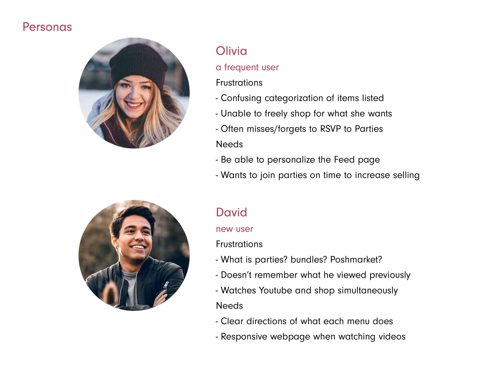
PROTOTYPING
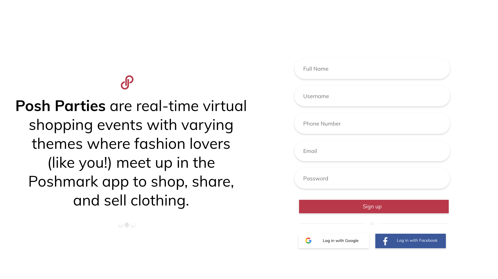
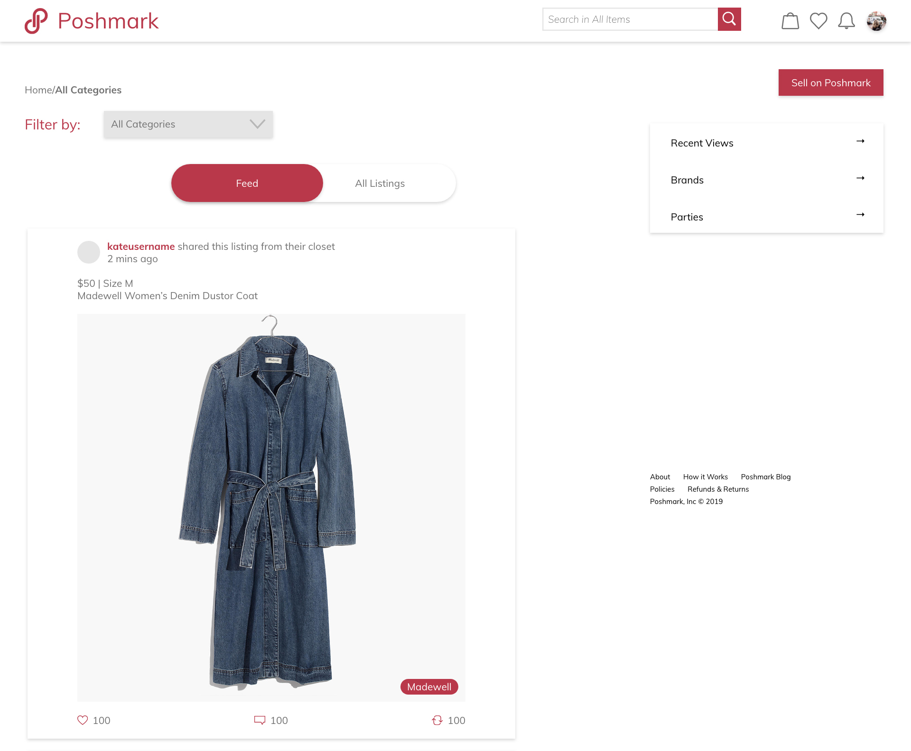
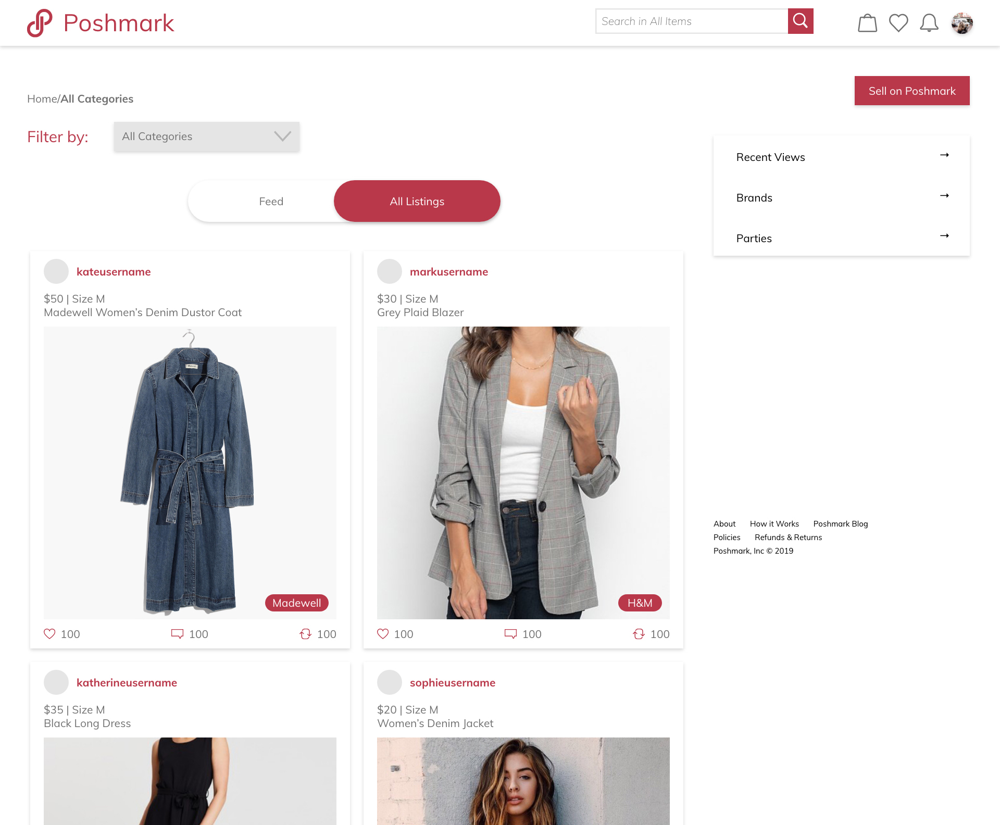
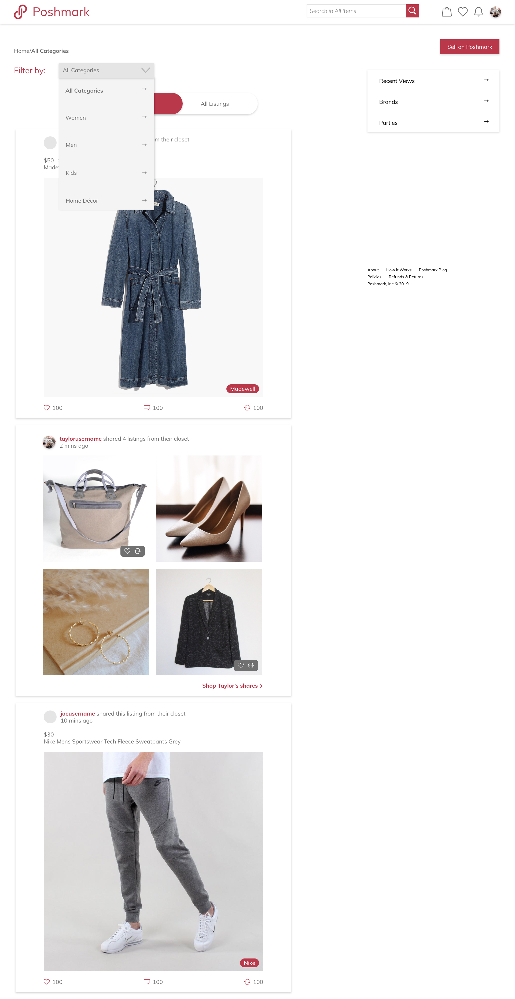
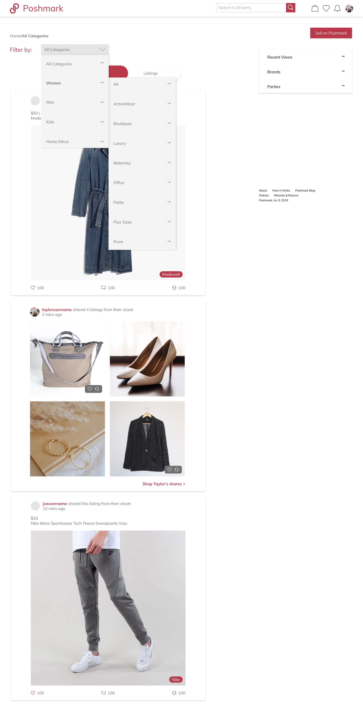
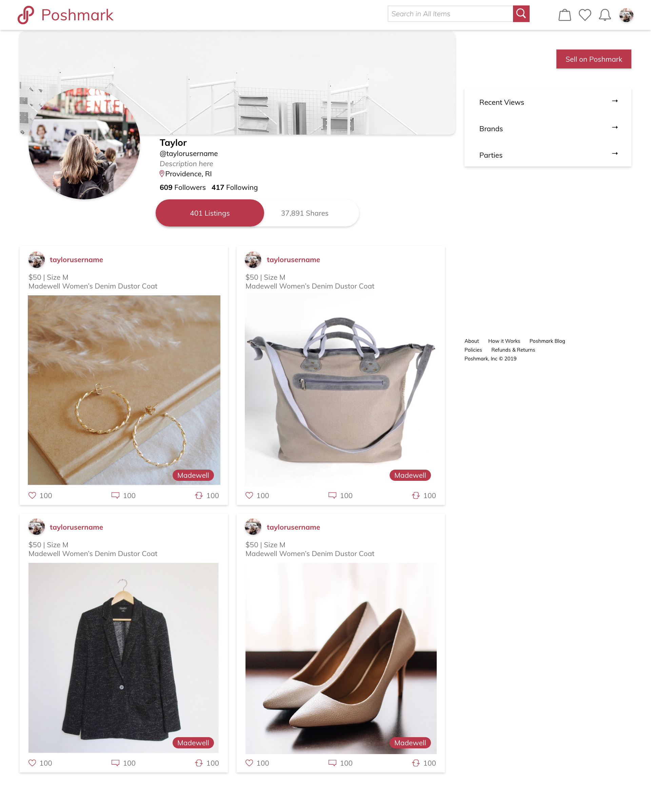
Responsive Page.
We used a different grid for mobile version for better organization. The grids used for the mobile version are:
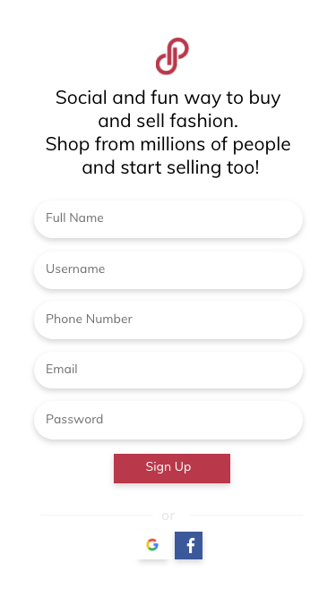
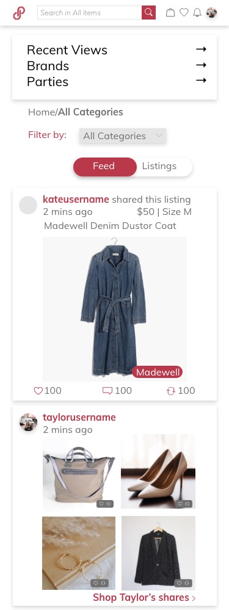
USABILITY TESTING
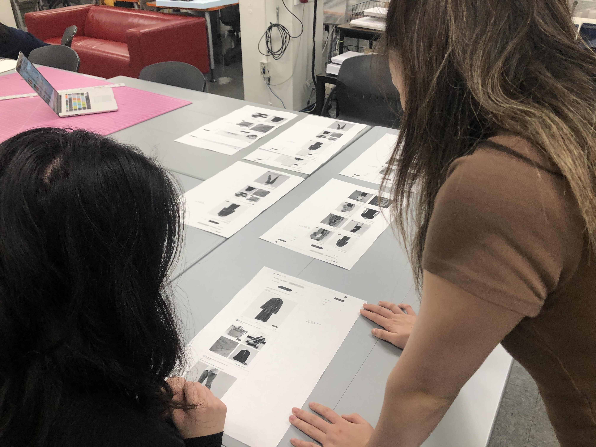